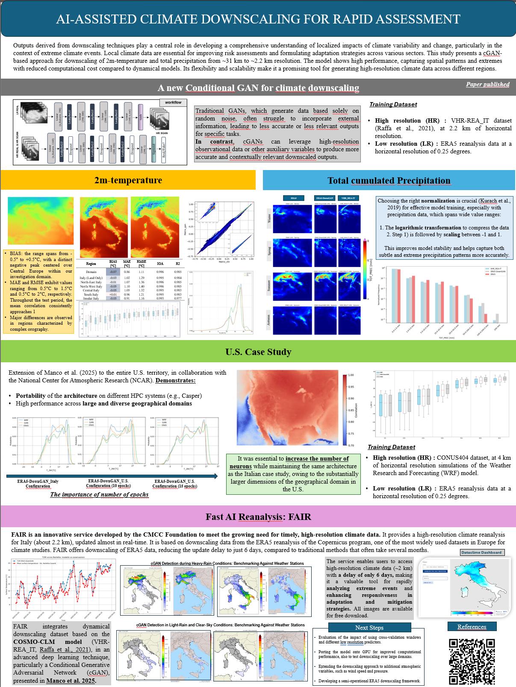

Poster: AI-ASSISTED CLIMATE DOWNSCALING FOR RAPID ASSESSMENT

References
- Raffa et al., 2021 – VHR-REA_IT dataset
- Manco et al., 2025 – Downscaling with Conditional GANs
- Karaca et al., 2022 – Normalization for precipitation extremes
- ERA5 dataset – Copernicus Climate Data Store
- CMCC Foundation – FAIR: Fast AI Reanalysis for Italy